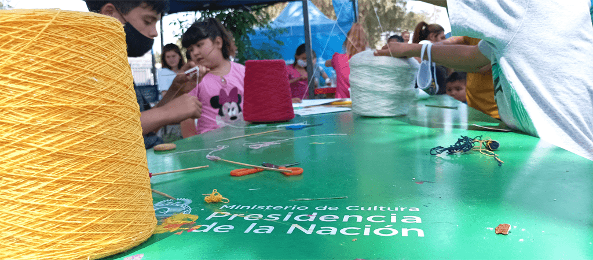

Galería de imagenes


Noticias Relevantes

El Ministerio de Cultural pone el programa "Cultura Solidaria" para acompañar al Tren "Dr. Ramón Carrillo"
El Ministerio de Cultura participa a través del Plan Nacional de Cultura Solidaria, acompañando con propuestas recreativas destinadas a las vecinas y los vecinos que asisten al tren.

El Tren de Desarrollo Social y Sanitario, con el Vagón Cultural Raúl Scalabrini Ortiz, llegó a la ciudad de Carlos Casares
La Biblioteca Nacional "Mariano Moreno" acompaña al tren sanitario desde el vagón cultural

La Biblioteca del Congreso se sube al Tren Sanitario
Gracias a un acuerdo con el Ministerio de Desarrollo Social de la Nación, la Biblioteca del Congreso se sube al Tren Argentino para acercar sus actividades a las localidades más alejadas del país, reafirmando así el sentido federal de sus servicios.